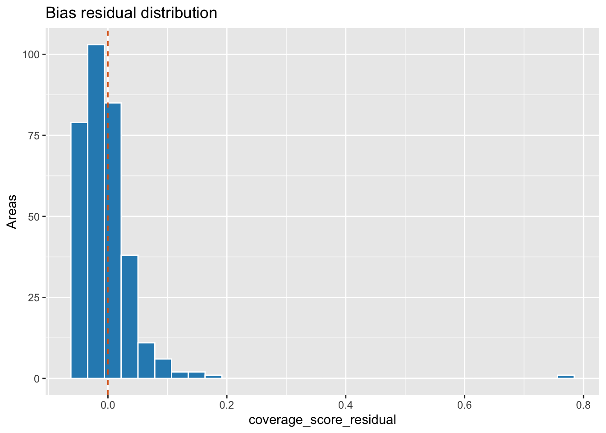
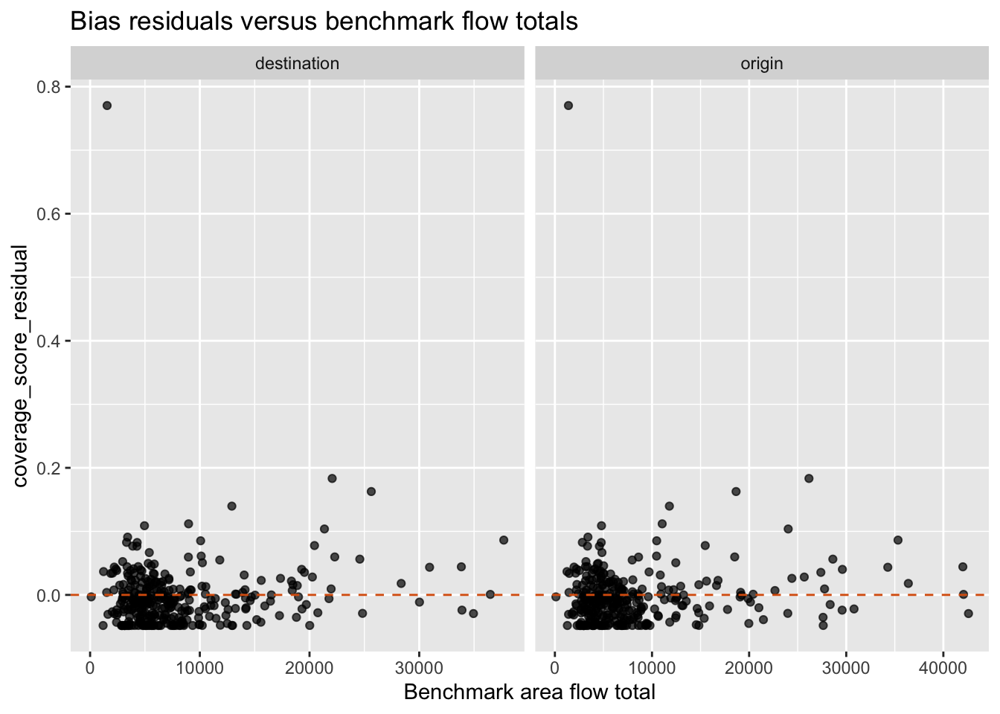
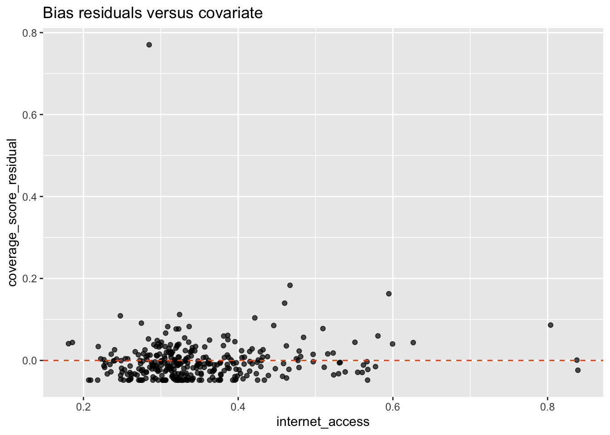
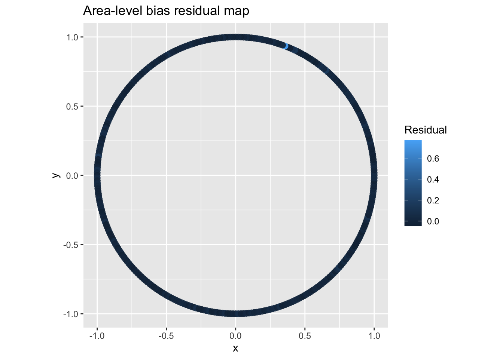

find_pkg_root <- function(path = getwd()) {
path <- normalizePath(path, mustWork = TRUE)
repeat {
if (file.exists(file.path(path, "DESCRIPTION"))) {
return(path)
}
parent <- dirname(path)
if (identical(parent, path)) {
stop("Could not find package root containing DESCRIPTION.")
}
path <- parent
}
}
pkg_root <- find_pkg_root()
setwd(pkg_root)
if (requireNamespace("devtools", quietly = TRUE)) {
devtools::load_all(pkg_root, quiet = TRUE)
} else {
library(debiasR)
}
library(dplyr)
library(tibble)
has_ggplot2 <- requireNamespace("ggplot2", quietly = TRUE)
if (has_ggplot2) {
library(ggplot2)
}Stage 3 Measure Bias Review Notebook
1 Purpose
This notebook reviews the Stage 3 measure-bias diagnostics implemented in validate_bias_residual_structure().
It uses the package’s deterministic simulated data to inspect:
measure_bias()coverage quantities,- Stage 3 coverage residual definitions,
- optional Moran’s I from a plain neighbour-link table,
- benchmark origin-flow and destination-flow correlations,
- covariate correlations,
- map-ready and plot-ready outputs.
2 Setup
data("simulated_coverage", package = "debiasR")
data("simulated_benchmark.od", package = "debiasR")
data("simulated_covariates", package = "debiasR")
tibble(
dataset = c(
"simulated_coverage",
"simulated_benchmark.od",
"simulated_covariates"
),
rows = c(
nrow(simulated_coverage),
nrow(simulated_benchmark.od),
nrow(simulated_covariates)
),
columns = c(
paste(names(simulated_coverage), collapse = ", "),
paste(names(simulated_benchmark.od), collapse = ", "),
paste(names(simulated_covariates), collapse = ", ")
)
)# A tibble: 3 × 3
dataset rows columns
<chr> <int> <chr>
1 simulated_coverage 328 origin, destination, population, user_count, mp…
2 simulated_benchmark.od 107256 origin, destination, flow
3 simulated_covariates 328 area, population, population_origin, population…3 Coverage Quantities
measure_bias() remains the compact coverage calculator. It returns coverage_score, coverage_bias, and the backward-compatible bias alias.
coverage_measures <- measure_bias(simulated_coverage)
coverage_measures |>
select(origin, population, user_count, coverage_score, coverage_bias, bias) |>
slice_head(n = 10)# A tibble: 10 × 6
origin population user_count coverage_score coverage_bias bias
<chr> <dbl> <dbl> <dbl> <dbl> <dbl>
1 Adur 4975 558 0.112 0.888 0.888
2 Allerdale 6750 1005 0.149 0.851 0.851
3 Amber Valley 9334 808 0.0866 0.913 0.913
4 Arun 13750 1416 0.103 0.897 0.897
5 Ashfield 9323 1280 0.137 0.863 0.863
6 Ashford 12042 1287 0.107 0.893 0.893
7 Babergh 7491 449 0.0599 0.940 0.940
8 Barking and Dagenham 20930 1279 0.0611 0.939 0.939
9 Barnet 45399 2723 0.0600 0.940 0.940
10 Barnsley 17559 1349 0.0768 0.923 0.923coverage_measures |>
summarise(
areas = n(),
total_population = sum(population, na.rm = TRUE),
total_user_count = sum(user_count, na.rm = TRUE),
global_coverage_score = sum(user_count, na.rm = TRUE) / sum(population, na.rm = TRUE),
mean_area_coverage_score = mean(coverage_score, na.rm = TRUE),
sd_area_coverage_score = sd(coverage_score, na.rm = TRUE)
)# A tibble: 1 × 6
areas total_population total_user_count global_coverage_score
<int> <dbl> <dbl> <dbl>
1 328 5796823 626483 0.108
# ℹ 2 more variables: mean_area_coverage_score <dbl>,
# sd_area_coverage_score <dbl>4 Review Inputs
validate_bias_residual_structure() can compute Moran’s I when supplied with a plain neighbour-link table. This notebook creates a deterministic ring-neighbour structure from the simulated area names.
It also creates simple circular coordinates so optional map-ready output can be inspected without spatial dependencies.
areas <- sort(unique(simulated_coverage$origin))
area_neighbors <- tibble(
area = areas,
neighbor = dplyr::lead(areas, default = areas[1])
) |>
bind_rows(tibble(
area = areas,
neighbor = dplyr::lag(areas, default = areas[length(areas)])
))
area_coordinates <- tibble(
area = areas,
angle = seq(0, 2 * pi, length.out = length(areas) + 1)[seq_along(areas)],
x = cos(angle),
y = sin(angle)
) |>
select(-angle)
area_neighbors |>
slice_head(n = 10)# A tibble: 10 × 2
area neighbor
<chr> <chr>
1 Adur Allerdale
2 Allerdale Amber Valley
3 Amber Valley Arun
4 Arun Ashfield
5 Ashfield Ashford
6 Ashford Babergh
7 Babergh Barking and Dagenham
8 Barking and Dagenham Barnet
9 Barnet Barnsley
10 Barnsley Barrow-in-Furness 5 Default Stage 3 Diagnostics
The default selected residual is coverage_score_residual.
bias_structure <- validate_bias_residual_structure(
coverage_df = simulated_coverage,
benchmark_od_df = simulated_benchmark.od,
area_neighbors = area_neighbors,
covariate_df = simulated_covariates,
covariate_col = "internet_access",
geometry_df = area_coordinates,
x_col = "x",
y_col = "y",
make_plots = has_ggplot2
)
bias_structure$summary# A tibble: 1 × 14
residual_type selected_residual_col n_areas total_population total_user_count
<chr> <chr> <int> <dbl> <dbl>
1 coverage_score coverage_score_resid… 328 5796823 626483
# ℹ 9 more variables: global_coverage_score <dbl>, mean_coverage_score <dbl>,
# sd_coverage_score <dbl>, mean_selected_residual <dbl>,
# sd_selected_residual <dbl>, moran_i <dbl>,
# pearson_bias_benchmark_origin_flow <dbl>,
# pearson_bias_benchmark_destination_flow <dbl>, pearson_bias_covariate <dbl>bias_structure$residual_definitions# A tibble: 3 × 3
residual definition interpretation
<chr> <chr> <chr>
1 coverage_score_residual coverage_score - global_cover… Positive valu…
2 user_count_residual user_count - expected_user_co… Positive valu…
3 standardized_user_count_residual user_count_residual / sqrt(ex… Positive valu…6 Area-Level Residuals
Positive residuals indicate areas with higher active-user coverage than expected under the global coverage score. Negative residuals indicate lower coverage than expected.
bias_structure$area_level |>
select(
area,
population,
user_count,
coverage_score,
global_coverage_score,
expected_user_count,
user_count_residual,
coverage_score_residual,
standardized_user_count_residual,
selected_residual
) |>
arrange(desc(abs(selected_residual))) |>
slice_head(n = 15)# A tibble: 15 × 10
area population user_count coverage_score global_coverage_score
<chr> <dbl> <dbl> <dbl> <dbl>
1 City of London 1578 1386 0.878 0.108
2 Camden 37598 10954 0.291 0.108
3 Liverpool 57511 15572 0.271 0.108
4 Cheshire West and… 31247 7743 0.248 0.108
5 Trafford 20168 4436 0.220 0.108
6 Gedling 8831 1916 0.217 0.108
7 Westminster 34912 7396 0.212 0.108
8 Chesterfield 7959 1584 0.199 0.108
9 Manchester 81735 15883 0.194 0.108
10 Stockport 23156 4475 0.193 0.108
11 Scarborough 9086 1733 0.191 0.108
12 Blackpool 12727 2425 0.191 0.108
13 Cardiff 49344 9166 0.186 0.108
14 South Lakeland 8303 1535 0.185 0.108
15 Newport 11720 2165 0.185 0.108
# ℹ 5 more variables: expected_user_count <dbl>, user_count_residual <dbl>,
# coverage_score_residual <dbl>, standardized_user_count_residual <dbl>,
# selected_residual <dbl>bias_structure$area_level |>
summarise(
mean_coverage_score_residual = mean(coverage_score_residual, na.rm = TRUE),
sd_coverage_score_residual = sd(coverage_score_residual, na.rm = TRUE),
min_coverage_score_residual = min(coverage_score_residual, na.rm = TRUE),
max_coverage_score_residual = max(coverage_score_residual, na.rm = TRUE),
mean_user_count_residual = mean(user_count_residual, na.rm = TRUE),
sum_user_count_residual = sum(user_count_residual, na.rm = TRUE)
)# A tibble: 1 × 6
mean_coverage_score_residual sd_coverage_score_residual min_coverage_score_r…¹
<dbl> <dbl> <dbl>
1 -0.00320 0.0566 -0.0482
# ℹ abbreviated name: ¹min_coverage_score_residual
# ℹ 3 more variables: max_coverage_score_residual <dbl>,
# mean_user_count_residual <dbl>, sum_user_count_residual <dbl>7 Spatial Randomness
The Moran’s I calculation uses only the user-supplied neighbour links.
bias_structure$moran_i# A tibble: 1 × 5
residual_type n_areas_used n_links_used weight_sum moran_i
<chr> <int> <int> <dbl> <dbl>
1 coverage_score 328 656 656 -0.03658 Benchmark Flow Correlations
Benchmark flows are collapsed separately to origin totals and destination totals before correlation with the selected bias residual.
bias_structure$benchmark_flow_correlation# A tibble: 2 × 4
residual_type benchmark_flow_role n pearson_r
<chr> <chr> <int> <dbl>
1 coverage_score destination 328 0.0860
2 coverage_score origin 328 0.0849bias_structure$benchmark_flow_data |>
arrange(benchmark_flow_role, desc(abs(selected_residual))) |>
group_by(benchmark_flow_role) |>
slice_head(n = 8) |>
ungroup()# A tibble: 16 × 9
area residual_type benchmark_flow_role selected_residual
<chr> <chr> <chr> <dbl>
1 City of London coverage_sco… destination 0.770
2 Camden coverage_sco… destination 0.183
3 Liverpool coverage_sco… destination 0.163
4 Cheshire West and Chester coverage_sco… destination 0.140
5 Trafford coverage_sco… destination 0.112
6 Gedling coverage_sco… destination 0.109
7 Westminster coverage_sco… destination 0.104
8 Chesterfield coverage_sco… destination 0.0909
9 City of London coverage_sco… origin 0.770
10 Camden coverage_sco… origin 0.183
11 Liverpool coverage_sco… origin 0.163
12 Cheshire West and Chester coverage_sco… origin 0.140
13 Trafford coverage_sco… origin 0.112
14 Gedling coverage_sco… origin 0.109
15 Westminster coverage_sco… origin 0.104
16 Chesterfield coverage_sco… origin 0.0909
# ℹ 5 more variables: benchmark_flow_total <dbl>, population <dbl>,
# user_count <dbl>, coverage_score <dbl>, coverage_score_residual <dbl>9 Covariate Correlation
The covariate interface mirrors validate_flow_residual_structure(): pass a plain area-level table and name the area and covariate columns explicitly.
bias_structure$covariate_correlation# A tibble: 1 × 4
residual_type covariate n pearson_r
<chr> <chr> <int> <dbl>
1 coverage_score internet_access 328 0.0837bias_structure$covariate_data |>
select(area, covariate_value, selected_residual, coverage_score, population, user_count) |>
arrange(desc(abs(selected_residual))) |>
slice_head(n = 12)# A tibble: 12 × 6
area covariate_value selected_residual coverage_score population user_count
<chr> <dbl> <dbl> <dbl> <dbl> <dbl>
1 City … 0.285 0.770 0.878 1578 1386
2 Camden 0.467 0.183 0.291 37598 10954
3 Liver… 0.595 0.163 0.271 57511 15572
4 Chesh… 0.460 0.140 0.248 31247 7743
5 Traff… 0.324 0.112 0.220 20168 4436
6 Gedli… 0.248 0.109 0.217 8831 1916
7 Westm… 0.421 0.104 0.212 34912 7396
8 Chest… 0.275 0.0909 0.199 7959 1584
9 Manch… 0.804 0.0862 0.194 81735 15883
10 Stock… 0.446 0.0852 0.193 23156 4475
11 Scarb… 0.337 0.0827 0.191 9086 1733
12 Black… 0.309 0.0825 0.191 12727 242510 Alternative Residual Scale
The same helper can use count-scale or standardized count residuals for the selected diagnostic residual.
count_residual_structure <- validate_bias_residual_structure(
coverage_df = simulated_coverage,
residual_type = "user_count",
benchmark_od_df = simulated_benchmark.od,
covariate_df = simulated_covariates,
covariate_col = "internet_access"
)
standardized_residual_structure <- validate_bias_residual_structure(
coverage_df = simulated_coverage,
residual_type = "standardized_user_count",
benchmark_od_df = simulated_benchmark.od,
covariate_df = simulated_covariates,
covariate_col = "internet_access"
)
bind_rows(
bias_structure$summary,
count_residual_structure$summary,
standardized_residual_structure$summary
) |>
select(
residual_type,
selected_residual_col,
mean_selected_residual,
sd_selected_residual,
pearson_bias_benchmark_origin_flow,
pearson_bias_benchmark_destination_flow,
pearson_bias_covariate
)# A tibble: 3 × 7
residual_type selected_residual_col mean_selected_residual
<chr> <chr> <dbl>
1 coverage_score coverage_score_residual -3.20e- 3
2 user_count user_count_residual -1.66e-14
3 standardized_user_count standardized_user_count_residu… -9.82e- 1
# ℹ 4 more variables: sd_selected_residual <dbl>,
# pearson_bias_benchmark_origin_flow <dbl>,
# pearson_bias_benchmark_destination_flow <dbl>, pearson_bias_covariate <dbl>11 Optional Plots
Plots are returned only when ggplot2 is installed and make_plots = TRUE.
if (has_ggplot2) {
bias_structure$plots$bias_residual_distribution
}
if (has_ggplot2) {
bias_structure$plots$bias_residual_vs_benchmark_flow
}
if (has_ggplot2) {
bias_structure$plots$bias_residual_vs_covariate
}
if (has_ggplot2) {
bias_structure$plots$bias_residual_map
}
12 Review Checklist
tibble(
check = c(
"coverage residuals sum to zero on the count scale",
"default residual is coverage_score_residual",
"benchmark origin and destination correlations returned",
"covariate correlation returned",
"map-ready data contains coordinates"
),
passed = c(
abs(sum(bias_structure$area_level$user_count_residual, na.rm = TRUE)) < 1e-8,
identical(bias_structure$summary$selected_residual_col, "coverage_score_residual"),
all(c("origin", "destination") %in% bias_structure$benchmark_flow_correlation$benchmark_flow_role),
is.finite(bias_structure$covariate_correlation$pearson_r),
all(c("x", "y") %in% names(bias_structure$map_data))
)
)# A tibble: 5 × 2
check passed
<chr> <lgl>
1 coverage residuals sum to zero on the count scale TRUE
2 default residual is coverage_score_residual TRUE
3 benchmark origin and destination correlations returned TRUE
4 covariate correlation returned TRUE
5 map-ready data contains coordinates TRUE